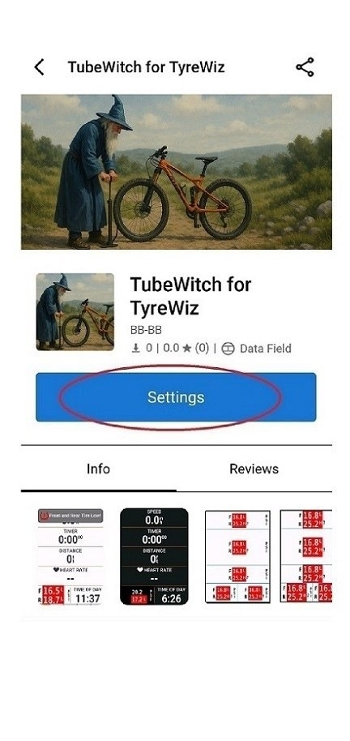

Settings guide
TubeWitch Settings
Technical reference for all TubeWitch settings in Garmin Connect IQ order.
This page is meant to cut through the long list of options. Start with Sensor IDs and Active Sensor Set. Then confirm that TubeWitch connects and shows live pressures before tuning alerts. Most other controls are optional, and the defaults should work well for most riders.

ACTIVE SENSOR SET
- Active Sensor Set Choose which Sensor Set is shown in the Data Field. Manually select the active set or use Auto Switch to scan each configured set for 10 seconds. If you only have one set, Auto is not recommended.
SENSOR SET #1-5
- Sensor Set Name Optional. Name each bike or wheelset clearly. The set name is also shown in Connect IQ stats.
- Enabled Sensors Choose Front & Rear, Front Only, or Rear Only.
- Front Sensor ID and Rear Sensor ID Enter only the numeric part of the sensor ID. Find it printed on the sensors or in the SRAM app as AGG##### or similar.
- Front Sensor Notes and Rear Sensor Notes Optional. These notes are visible only in settings.
Use Enabled Sensors to avoid empty slots in mixed setups.
Notes are visible only in settings and help label tire or wheel details for later reference.
UNIT OF MEASURE
- Unit of Measure PSI, kPa, or BAR. Garmin reboot recommended after the unit change.
- Decimal Places Number of digits to the right of the decimal. Forcing extra digits may cause labels to be truncated on small data fields.
- Show Unit of Measure Show or hide the unit label in the data field.
Extra precision can make small layouts harder to scan. Limit precision to what remains readable while moving. Auto is recommended.
SENSOR LABELS
- Show Front/Rear Labels Show or hide front and rear labels in the data field.
- Show Sensor IDs Show sensor IDs in the data field. They may be truncated on small data fields.
- Show Sensor Set Name Show the sensor set name in the data field. It may be truncated on small data fields.
- Horizontal Layout Label Delimiter Choose the separator used on horizontal layouts.
Useful during setup and multi-bike use, but these can crowd very small layouts.
DISPLAY
- Display Style TubeWitch Mode is the default, but it may be unavailable on some devices that are not yet fully supported. Compatibility Mode uses dynamic font sizing and positioning and works on all devices.
- Layout Orientation Auto, Vertical, or Horizontal. Horizontal Orientation is not available in narrow fields while using TubeWitch Display Mode.
- Background Color Auto, Light, or Dark.
TubeWitch Mode is default. Compatibility Mode uses dynamic sizing and positioning for broader device coverage.
Auto, Vertical, or Horizontal layout behavior.
Auto, Light, or Dark styling depending on layout and page contrast.
TOUCH SETTINGS
- Touch Data Field Enables Touch to Switch Sensor Sets, Touch to Disable TubeWitch, and Touch to Rescan after timeout. Only available on touchscreen devices.
SENSOR TIMEOUT
- Sensor Timeout Default 15 Minutes. During an activity, TubeWitch times out if no sensors are found. No timeout is applied if an activity is not started.
AUTO SWITCH SCAN DELAY
- Auto Switch Scan Delay Default 60 Seconds. If both sensors disconnect while Active Sensor Set = Auto, TubeWitch waits for this delay before scanning other sets again at 10 seconds each.
HIGH/LOW PRESSURE ALARMS
(Set pressure targets in the SRAM AXS mobile app)
This keeps TubeWitch status aligned with the TyreWiz LED indication on the sensor.
The defaults should work well for most riders. If alerts need to trigger sooner, later, or stay active longer before resetting, this is the place to tune that behavior.
- Audible Alert Enable or disable audible pressure alerts on supported Edge Devices and watches.
- Pop Up Alert Enable popup alerts on newer supported devices.
- Vibration Alert Enable vibration alerts on supported watches.
- Alarm Delay Set how many seconds a tire must be High/Low before triggering an alarm.
- Reset Delay Set how many seconds a tire must be within target before resetting the pressure alarm.
- Audible Alarm Tone Select the sound used for audible alerts.
- Data Field Alarm Box Color Choose the box color used for the pressure alarm state. The color change is always active and instantaneous while the condition exists.
ACTIVITY RECORDING
(Garmin reboot required after making recording changes)
- Record Front Pressure Record front pressure into the activity.
- Record Rear Pressure Record rear pressure into the activity.
- Record Front Pressure Alarm Record front pressure alarm status.
- Record Rear Pressure Alarm Record rear pressure alarm status.
- Record Front Pressure Stale Data Indicator Record front stale data indicator status.
- Record Rear Pressure Stale Data Indicator Record rear stale data indicator status.
- Record Sensor Set # Record the sensor set number used in the activity.
For post-ride review, the most useful additions are often set number and alarm status alongside raw pressure.
TUBEWITCH LABS
- Multi-Sensor Compatibility Mode Enable this if sensors cannot connect or are not assigned to F or R in the SRAM app.
Multi-Sensor Compatibility Mode is the fallback when sensors cannot connect cleanly or are not assigned to front and rear in the SRAM app.
Need more help?
If setup or settings issues are not addressed on this page, see Troubleshooting for step-by-step fixes or FAQ for common setup and compatibility questions.